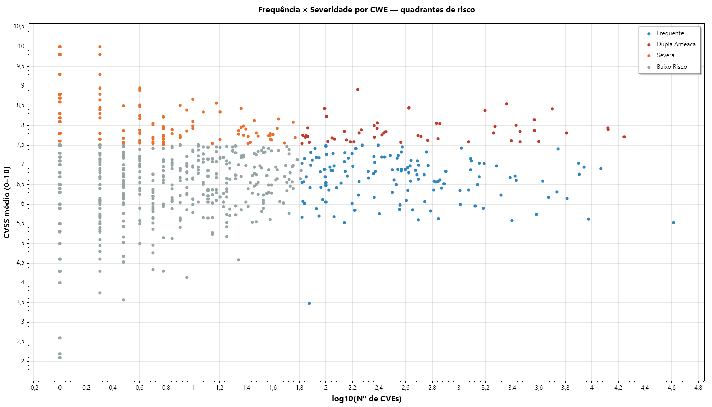
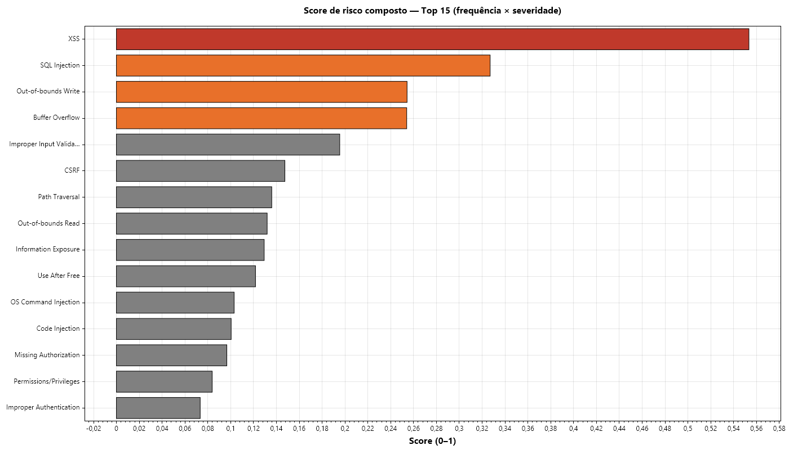
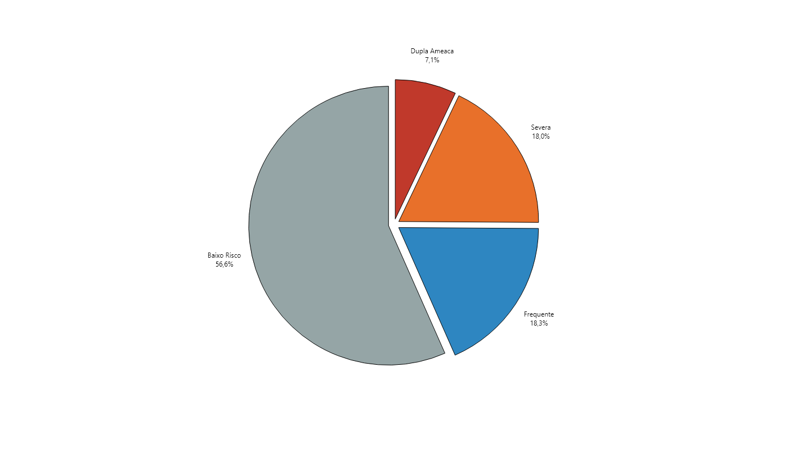

Caracterização do Dataset — Vulnerabilidades NVD (1999–2025)
CVEs distintos253.802
Relações CVE↔CWE278.912
CWEs distintas749
Cobertura CVSS99,99%
CVSS médio6,88
CVSS mediana7,00
Gini0,9223
Período1999–2025
Fonte: NIST NVD. Unidade: relação CVE↔CWE. Relações (278.912) > CVEs distintos (253.802) pois cada CVE pode ter múltiplas CWEs.
| Severidade | Nº CVEs | % | CVSS médio | CVSS mediana |
|---|
| LOW | 10.897 | 3,91% | 2,62 | 2,30 |
| MEDIUM | 127.021 | 45,54% | 5,58 | 5,50 |
| HIGH | 108.894 | 39,04% | 7,98 | 7,80 |
| CRITICAL | 32.057 | 11,49% | 9,72 | 9,80 |
01 cves por ano

02 severidade donut

03 severidade por ano 100pct

04 distribuicao cvss

RQ1 — Quais CWEs concentram a maior parte das vulnerabilidades?
Hipótese: distribuição não-uniforme (Pareto). Veredito: 38 CWEs = 80%; Gini = 0,92.
CWEs Pareto 80%: 38
Gini: 0,9223
01 pareto top30

02 tendencia top10

03 curva lorenz

04 persistencia jaccard

RQ2 — Quais CWEs têm maior potencial técnico de dano (CVSS)?
Hipótese: severidade varia entre CWEs. Veredito: Kruskal-Wallis p < 0,001; cluster CVSS ≈ 9,8.
CVSS médio global: 6,88
Mediana: 7,00
01 top30 cvss medio

02 top30 high critical

RQ3 — Ser frequente é o mesmo que ser perigoso?
Veredito: Spearman ρ ≈ −0,02 (independentes), mas 53 CWEs em Dupla Ameaça.
Spearman ρ: −0,018
CWEs Dupla Ameaça: 53
01 dispersao quadrantes

02 score risco top30

03 resumo quadrantes

Fila de priorização estratégica (Top 20 — quadrante Dupla Ameaça)
| # | CWE | Nome | CVEs | CVSS médio | % HI/CR | Score |
|---|
| 1 | CWE-89 | SQL Injection | 17.467 | 7,71 | 71,8% | 0,3270 |
| 2 | CWE-787 | Out-of-bounds Write | 13.192 | 7,94 | 81,3% | 0,2543 |
| 3 | CWE-119 | Buffer Overflow | 13.229 | 7,90 | 75,9% | 0,2540 |
| 4 | CWE-416 | Use After Free | 6.418 | 7,81 | 82,8% | 0,1217 |
| 5 | CWE-78 | OS Command Injection | 5.035 | 8,42 | 87,8% | 0,1030 |
| 6 | CWE-287 | Improper Authentication | 3.974 | 7,59 | 65,1% | 0,0733 |
| 7 | CWE-434 | Unrestricted File Upload | 3.692 | 8,15 | 80,9% | 0,0731 |
| 8 | CWE-120 | Classic Buffer Overflow | 3.697 | 7,87 | 77,1% | 0,0707 |
| 9 | CWE-77 | Command Injection | 2.883 | 7,85 | 73,9% | 0,0550 |
| 10 | CWE-190 | Integer Overflow | 2.882 | 7,58 | 75,5% | 0,0531 |
| 11 | CWE-121 | Stack-based Buffer Overflow | 2.687 | 8,01 | 85,1% | 0,0523 |
| 12 | CWE-502 | Deserialization | 2.280 | 8,55 | 90,1% | 0,0474 |
| 13 | CWE-269 | Improper Privilege Management | 2.473 | 7,61 | 75,8% | 0,0457 |
| 14 | CWE-306 | Missing Authentication | 1.871 | 7,98 | 75,5% | 0,0363 |
| 15 | CWE-122 | Heap-based Buffer Overflow | 1.829 | 7,81 | 84,5% | 0,0347 |
| 16 | CWE-798 | Hard-coded Credentials | 1.570 | 8,38 | 82,6% | 0,0320 |
| 17 | CWE-611 | XXE | 1.188 | 7,58 | 69,3% | 0,0219 |
| 18 | CWE-98 | CWE-98 | 721 | 8,05 | 96,3% | 0,0141 |
| 19 | CWE-843 | CWE-843 | 680 | 8,06 | 83,5% | 0,0133 |
| 20 | CWE-415 | CWE-415 | 699 | 7,66 | 78,7% | 0,0130 |
Síntese GQM — Pergunta → Métrica → Veredito
| ID | Pergunta | Métricas | Veredito | Evidência |
|---|
| P1 | Frequência: quais CWEs mais se repetem? | M1, M2, M7, M9, M10 | CONFIRMADA | 38 CWEs cobrem 80% das CVEs; Gini = 0,92 |
| P2 | Severidade: quais CWEs têm maior potencial de dano? | M3, M4, Kruskal-Wallis | CONFIRMADA | Cluster de ~15 CWEs com CVSS médio ≈ 9,8 (100% CRITICAL); Kruskal-Wallis p < 0,001 |
| P3 | Interação: frequência e severidade andam juntas? | M5, M6, M8, M11, Mann-Whitney | CONFIRMADA (com nuance) | Spearman ρ ≈ -0,02 (independentes), mas 53 CWEs em Dupla Ameaça |
Testes estatísticos
| Teste | Hipótese | p-valor | Resultado |
|---|
| Pareto (M2) | H1/H2 | — | CONFIRMA concentração (Pareto) |
| Kruskal-Wallis | H3/H4 | < 0,001 | CONFIRMA variação de severidade |
| Spearman (M6) | H5/H6 | 0,621 | CONFIRMA independência (risco bimodal) |
| Mann-Whitney U | H5/H6 (sanity) | < 0,001 | CONFIRMA distinção entre grupos |
Exportar PDF: Ctrl+P → Salvar como PDF (marque 'Gráficos de fundo').